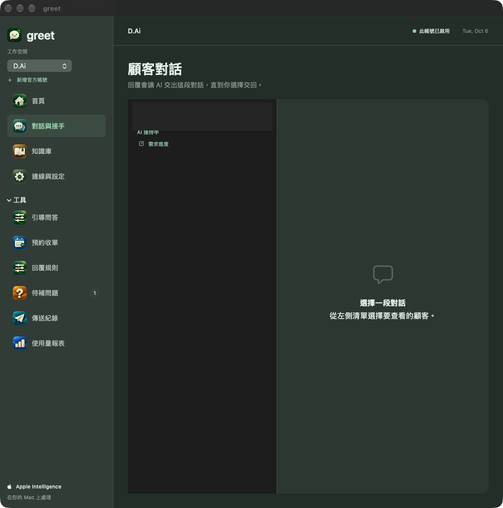
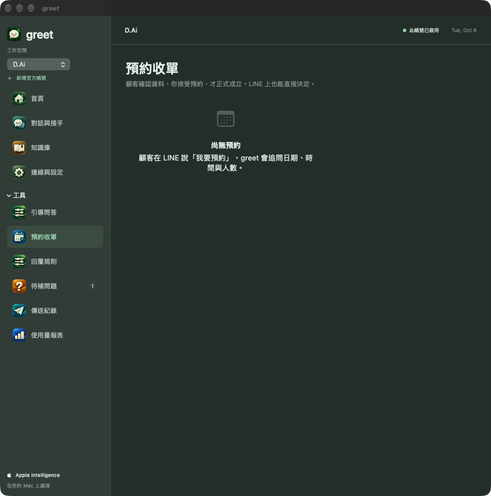

greet｜AI 客服 正式版 greet，實際在處理什麼？ 知識庫、顧客對話與預約收單。 知識庫｜整理 FAQ，使用試聊、參考文件與匯入工具。點選圖片可放大查看。 顧客對話｜在對話列表查看狀態與接手入口；畫面中的顧客資訊已遮蔽。點選圖片可放大查看。 預約收單｜正式介面中的預約工作區；截圖當時顯示「尚無預約」。點選圖片可放大查看。 使用環境與導入條件本機 App 需要 macOS 27 或以上；本機 AI 功能需要支援 Apple Intelligence 的 Mac，並完成模型設定。LINE 串接與實際回覆需依店家環境驗收，導入方式依需求評估。 聊聊你的客服需求。帶著服務內容與目前常見問題，一起確認適合的做法。用 LINE 聯絡我